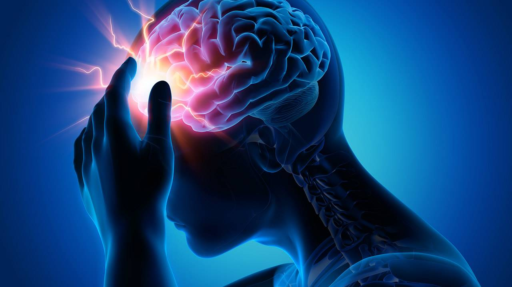

Accidente Cerebrovascular o ICTUS
Un accidente cerebrovascular isquémico ocurre cuando se interrumpe o se reduce el suministro de sangre a una parte del cerebro, lo que impide que el tejido cerebral reciba oxígeno y nutrientes.
Las células cerebrales comienzan a morir en minutos. Un accidente cerebrovascular es una emergencia médica, y el tratamiento inmediato es crucial(...).

Una alergia es una reacción de su sistema inmunitario hacia algo que no molesta a la mayoría de las demás personas. Quienes tienen alergias suelen ser sensibles a más de una cosa.
Las sustancias que suelen causar reacciones son(...).
Marta Nadal Herraiz y Jazmín Ramírez Agudelo
©Copyright. Todos los derechos reservados. 2022
Puedes volver a la página principal, haciendo click en logo o a través del siguiente enlace:aquí
También le puede interesar: UAlicante